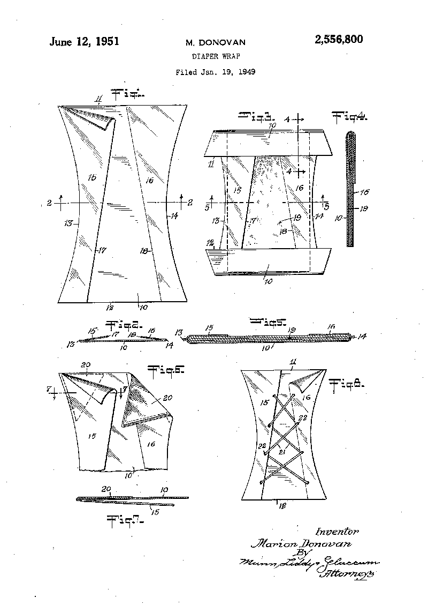

Marion
Donovan
Donovan
Viata
personala
personala

Povestea
inventiei
inventiei

Alte
inventii
inventii

 | |
Donovan s-a născut Marion O'Brien în South Bend, Indiana, în 1917. Mama ei a murit când era tânără, iar tatăl ei, un inginer și inventator însuși, i-a încurajat mintea inovatoare - a creat un nou tip de pulbere de curățare a dinților în timp ce încă se afla scoala elementara. După ce a absolvit facultatea, a mers să lucreze ca redactor la revistele de femei din New York, înainte de a se căsători și a se stabili în Connecticut.
Marion Donovan s-a născut în 1917 în Fort Wayne, Indiana .
Tatăl ei, de asemenea inventator, a dezvoltat și a condus fabrica de fabricație South Bend Lathe Works împreună cu unchiul ei din South Bend, Indiana .
Tatăl și unchiul ei au inventat un strung industrial care a fost folosit pentru a macina atât "angrenajele auto, cât și butoaiele de armă".
Donovan a obținut licența în engleză de la Rosemont College din Pennsylvania în 1939. În 1958, a obținut un master în arhitectură de la Universitatea Yale ,
unde a fost una dintre cele trei femei doar din clasa de absolvire.
Donovan a lucrat o vreme ca redactor atât la revista Harper's Bazaar, cât și la revista Vogue . În cele din urmă, a renunțat la aceste roluri pentru a se concentra pe inovație și brevete.
Donovan a fost căsătorit mai întâi cu James F. Donovan și mai târziu cu John F. Butler și au avut trei copii.
Marion O'Brien a crescut înconjurată de utilaje și invenții. Tatăl și unchiul ei au inventat „strungul South Bend”, folosit pentru măcinarea angrenajelor auto. După ce mama ei a murit la vârsta de șapte ani, Marion și-a petrecut cea mai mare parte a timpului liber în fabrica lor.
O'Brien s-a mutat spre est pentru a urma colegiul Rosemont din suburbiile din Philadelphia. După absolvirea în 1939, cu licență în literatură engleză, a ocupat un post de asistent de redactor de frumusețe la revista Vogue din New York. La scurt timp, s-a căsătorit cu James Donovan, un importator de piele, și-a dat demisia din funcția ei, a început o familie și s-a mutat la Westport, Connecticut.
După cel de-al Doilea Război Mondial , nemulțumit de sarcina nefericită și repetitivă de a schimba scutecele de pânză ale fiicei sale, împreună cu mizeria pe care scutecul murdar făcut pe lenjeria din jur și îmbrăcămintea fiicei sale, a venit cu o posibilă soluție. Cu ajutorul unei mașini de cusut și a unei perdele de duș, a reușit să dezvolte ceea ce este considerat primul capac de scutec impermeabil. Nu numai că acest nou scutece a împiedicat patul și hainele să nu se ude sau să fie murdare, dar, de asemenea, nu a provocat epuizarea sau erupția scutecului .
Donovan i-a fost acordat patru brevete pentru acoperirea scutecului său, inclusiv utilizarea de cleme de plastic, spre deosebire de ace de siguranță. În 1949, a încercat să vândă ceea ce ea numea „boater” unui număr de producători diferiți; efortul a fost, la început, în mare măsură nereușit. Ulterior a început să vândă scutecul impermeabil la Saks Fifth Avenue . Doi ani mai târziu, compania și brevetele sale au fost vândute pentru 1.000.000 de dolari către Keko Corporation. 9,5 milioane USD în 2018
|
|
Maternitatea i-a oferit lui Donovan motive întemeiate pentru a reînvia instinctele inovatoare ale propriei copilării. Ca toate mamele, Donovan s-a luptat cu obișnuita exasperantă a bebelușilor să-și ude scutecele imediat după ce au fost schimbate - ceea ce în acea perioadă însemna și foi murdare. Prima descoperire a lui Donovan, în 1946, a fost proiectarea unei învelitori de scutece impermeabile. Trecând în mod constant printr-o serie de perdele de duș, Donovan s-a folosit de mașina ei de cusut pentru a proiecta și perfecționa un capac de scutec reutilizabil, rezistent la scurgeri, care nu a creat, cum ar fi pantalonii de cauciuc pentru copii din epocă. Donovan a numit-o scutecul „Boater” pentru că i-a ajutat pe bebeluși „să rămână la linie”. Produsul final a fost de fapt din pânză de parașută din nailon și a prezentat o inovație suplimentară | |
Donovan a primit 20 de brevete din 1951 până în 1996. Acestea includeau aspecte esențiale legate de femeie și alte articole de comoditate, cum ar fi o cutie de țesut facial, cutie de containere de depozitare, distribuitor de prosoape, clemă de hosiery, plic și combina de foi de scris, organizator de dulapuri și ata dentară produse. În 1985, a inventat produsul DentaLoop, un fir dentar cu două straturi care a eliminat nevoia de a înfășura ața dentară în jurul degetului pentru utilizare.
|
|
Surprinzător, Donovan nu a avut succes instantaneu cu această idee. A vizitat marile companii de hârtie din SUA și a râs în mod rotund pentru faptul că a propus un astfel de articol inutil și practic. A fost nevoie de aproape zece ani pentru ca cineva să valorifice ideea lui Donovan: și anume, Victor Mills, creatorul Pampers®.
Între timp, Donovan se întorsese la școală. A obținut o diplomă în Arhitectură la Universitatea Yale în 1958. În cele din urmă, și-a proiectat propria casă în Greenwich, Connecticut în 1980, dar până atunci, a inventat numeroase soluții practice pentru problemele din jurul casei.
Donovan a obținut peste o duzină de brevete în total. Timp de mai mulți ani, a lucrat și în calitate de consultant în dezvoltarea de produse. Când a murit în 1998, a primit în cele din urmă o parte din atenția pe care o merita. Deși Marion Donovan nu este încă un nume al gospodăriei, părinții noi de pretutindeni au foarte mult de mulțumit. |
|
De exemplu, Donovan a inventat un cuier compact cu 30 de îmbrăcăminte („Big Hangup”); o farfurie cu săpun care se scurgea în chiuvetă; și „Zippity-Do”, un cordon elastic care se conecta deasupra umărului cu fermoarul de pe spatele unei rochii, eliminând contorsionismul necesar anterior pentru a îmbrăca majoritatea hainelor pentru femei.Donovan i-a fost acordat patru brevete pentru acoperirea scutecului său, inclusiv utilizarea de cleme de plastic, spre deosebire de ace de siguranță. În 1949, a încercat să vândă ceea ce ea numea „boater” unui număr de producători diferiți; efortul a fost, la început, în mare măsură nereușit. Ulterior a început să vândă scutecul impermeabil la Saks Fifth Avenue . Doi ani mai târziu, compania și brevetele sale au fost vândute pentru 1.000.000 de dolari către Keko Corporation. 9,5 milioane USD în 2018
Donovan a primit 20 de brevete din 1951 până în 1996. |
|